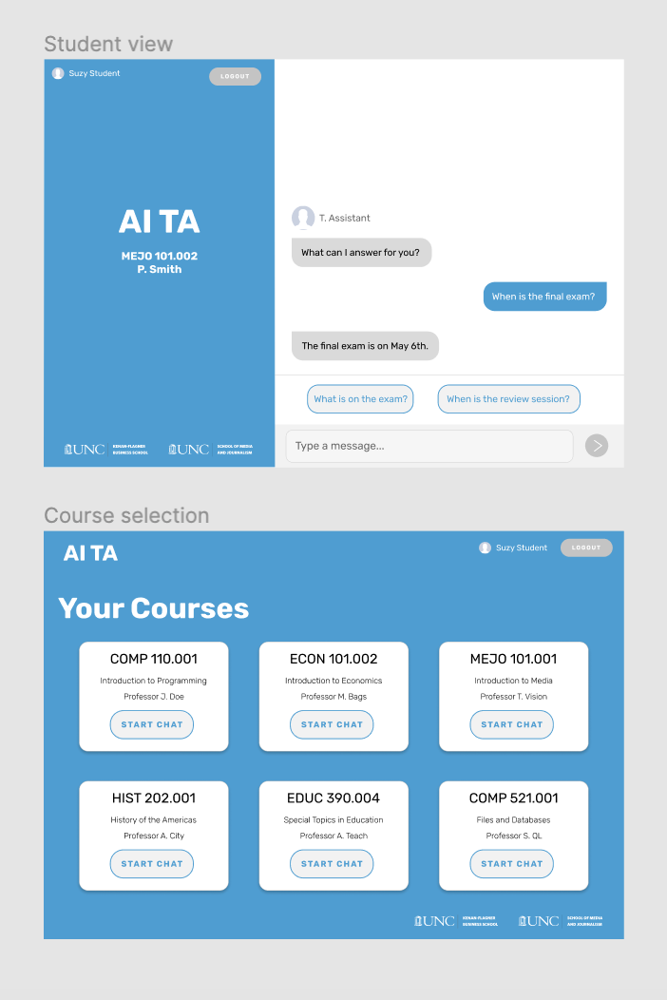

Here is a sampling of my projects throughout my college career. There are plenty of little class assignments and sandbox projects I don't have the space to show here, so these are the projects I am most proud of!
Copenhagen, Denmark Travel Blog
Summer 2019
I studied abroad in Copenhagen, Denmark for 3 weeks in May and June of 2019. I took a course through UNC called Modern Web Development where we spent three weeks broadly learning the entire website development process, from front-end HTML/CSS, TypeScript and React, to back-end Node and Express, to data stores in MySQL.
The site includes an administrator side to add new blog posts and manage existing blog posts, a photo gallery created with React, and a blog post for (almost!) every day of my trip. The design of the website was created entirely by me, and was inspired by our excursions to Danish design museums.
SAS Visual Analytics SDK Test Application
Summer 2019
I worked on this project as a SAS software development intern. I created an application used to test the functionality of Visual Analytics data reports when they're embedded into websites.
The application was created using React and TypeScript, and an offshoot of this application for analyzing the specific objects within the data reports was created utilizing simply HTML and URL parameters.
At the end of the summer, I got to present my work to SAS employees and executives at the Intern Expo. I had a lot of fun showing off what I worked on, as you can see from the photo to the left!
TA Chat Bot
Spring 2019

In my work with the UNC Emerging Technology Lab, I designed a chatbot that students could utilize to ask questions about their courses. These questions would normally be emailed to a teaching assistant, but with this chatbot, students could ask these questions and get immediate answers without filling the TA's inbox.
While the project was never developed past my design, I learned to use Figma as an interface design tool and enjoyed the iterative process.
React Component Library
Summer 2018
While working for MassMutual in Boston as a front end web development intern, I and another intern created a React.JS component library consisting of every web component across all of MassMutual's websites, translated into React. We organized the library by different structures throughout the summer and iterated through different code design patterns for our components. The components were tested using Jest and Enzyme to ensure full functionality when developers went to use our components.
This was my first taste of React, and I loved it a lot! This summer I also learned to use Git and other business-related softwares and methodologies, as well as sharpened my Terminal skills.
No Rules Checkers
Spring 2017
This was my very first project outside of a class assignment! I created "No Rules Checkers" with a friend at a hackathon put on by the introductory computer science class at UNC. We were working on our own project for the first time, but with our friends Google and the TA team, we created a working game of checkers using Java and JavaFX for the design. The game tracks your points and declares a winner when one player runs out of pieces.
We worked on this project for one full night, so it has its shortcomings, hence the "No Rules" in the name. Some sneaky behavior such as moving your piece to certain spots of the board are allowed (it's a feature... not a bug). Maybe someday we will turn this into "Checkers With Rules", but for now, you could do whatever you want on our Checkers board and we won't stop you.
Last but not least... This website!
Summer 2019
I took on this project in summer 2019 outside of my summer internship. I went through several design iterations for what I wanted the look and feel of my site to be using Adobe XD, and landed on this simple design that translates well between web and mobile platforms.
Currently, the site is a static HTML site with hints of JavaScript. My future direction for this site is to create my own contact form to accept comments and questions directly through my site. I would also like to add a blog portion for my commentary on development and design, as well as I plan to assess the site's accessibility and optimize the site for screen-readers, keyboard-only access, resizable text, and non-traditional computing devices.